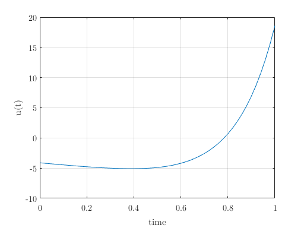
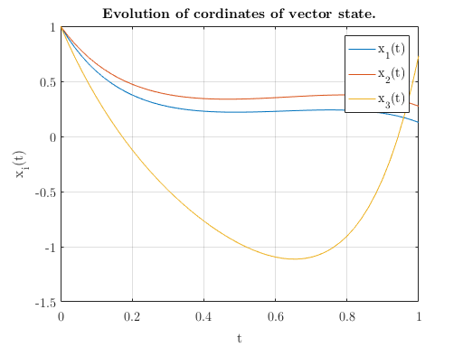
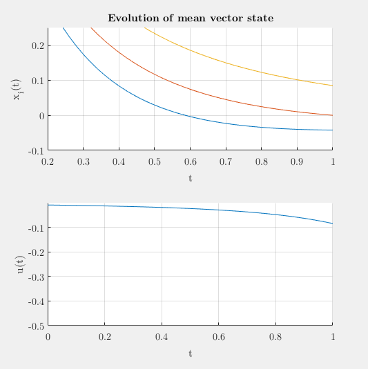
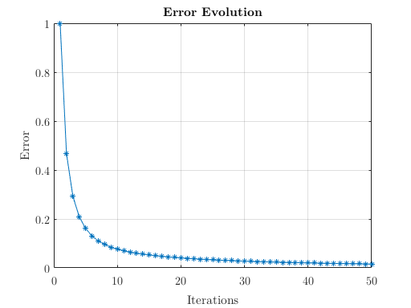

DyCon Tutorials
Average Control
In this work, we address the optimal control of parameter-dependent systems. We introduce the notion of averaged control in which the quantity of interest is the average of the states with respect to the parameter family
In this case $\nu_i$ are:
nu = 1:0.5:6
nu =
Columns 1 through 7
1.0000 1.5000 2.0000 2.5000 3.0000 3.5000 4.0000
Columns 8 through 11
4.5000 5.0000 5.5000 6.0000
And save in K, the number of values
K = length(nu);
Where the finite dimensional linear control system is:
We can, define the initial state of all ode’s
N = 3; % dimension of vector state
x0 = ones(N, 1);
Also, need define a initial control, that will be evolve
dt = 0.02;
t0 = 0; T = 1;
span = (t0:dt:T);
%
u = zeros(length(span),1);
%Moreover, we can define the matrix A's and B's, that determine the problem
Am = -triu(ones(N))
Am =
-1 -1 -1
0 -1 -1
0 0 -1
Bm = zeros(N, 1);
Bm(N) = 1
Bm =
0
0
1
So, we can create these edo’s in variable primal_odes.
primal_odes = zeros(1,K,'ode');
for index = 1:K
A = Am + (nu(index) - 1 )*diag(diag(Am));
%
primal_odes(index) = ode(A,'B',Bm);
% all have the same control
primal_odes(index).u = u;
% time intervals
primal_odes(index).span = span;
% initial state
primal_odes(index).x0 = x0;
end
So, we have a $K$ ordinary differential equations
primal_odes
primal_odes =
1x11 ode array with properties:
A
B
u
x0
x
span
xend
To solve average control problem to x0; in this case:
xt = zeros(N, 1)
xt =
0
0
0
we can solve the minimization problem
We can use the classical gradient descent method based on the adjoint methodology, and obtain the corresponding adjoint system for 1,
The same way that before, we define the adjoints problems
adjoint_odes = zeros(1,K,'ode');
for index = 1:K
A = primal_odes(index).A';
adjoint_odes(index) = ode(A);
% all have the same control
adjoint_odes(index).u = u;
% time intervals
adjoint_odes(index).span = span;
end
However the initial state adjoint_odes(index).x0 hasn’t been assign. This initial state will be assign in every step of solution.
To minimize the functional, $\mathcal{J}\left( u\right)$, we take the steepest descent direction given by
We process to solve the problem of classical gradient descent
gamma = 1;
beta = 1e-3;
tol = 1e-8; % Tolerance
error = Inf;
MaxIter = 50;
iter = 0;
xhistory = {}; uhistory = {}; error_history = []; % array here we will save the evolution of average vector states
while (error > tol && iter < MaxIter)
iter = iter + 1;
% solve primal problem
% ====================
solve(primal_odes);
% calculate mean state final vector of primal problems
xMend = forall({primal_odes.xend},'mean');
% solve adjoints problems
% =======================
% update new initial state of all adjoint problems
for iode = adjoint_odes
iode.x0 = -(xMend' - xt);
end
% solve adjoints problems with the new initial state
solve(adjoint_odes);
% update control
% ===============
% calculate mean state vector of adjoints problems
pM = forall({adjoint_odes.x},'mean');
pM = pM*Bm;
% reverse adjoint variable
pM = flipud(pM);
% Control update
u = primal_odes(1).u; % catch control currently
Du = beta*u - pM;
u = u - gamma*Du;
% update control in primal problems
for index = 1:K
primal_odes(index).u = u;
end
% Control error
% =============
% Calculate area ratio of Du^2 and u^2
Au2 = trapz(span,u.^2);
ADu2 = trapz(span,Du.^2);
%
error = sqrt(ADu2/Au2);
% Save evolution
xhistory{iter} = [ span',forall({primal_odes.x},'mean')];
uhistory{iter} = [ span',u];
error_history = [ error_history, error];
end
The average control obtain is
plot(span,u)
xlabel('time');ylabel('u(t)')
format_plot(gcf)

Also, on average the objective [0 0 0] has been reached.
figure;
plot(iode.span,forall({primal_odes.x},'mean'))
xlabel('t');ylabel('x_{i}(t)')
legend(strcat('x_{',num2str((1:N)','%0.1d'),'}(t)'))
title('Evolution of cordinates of vector state.')
format_plot(gcf)

You can use the comand
animation_sol(xhistory,uhistory,'figure',f,'XLim',[-3 3],'ULim',[-10 30])
We can see 
If we analyze the evolution in the error, we can see that we should have stopped, in iteration 20.
plot(error_history,'-*')
title('Error Evolution')
ylabel('Error'); xlabel('Iterations')
format_plot(gcf)

References
-
E. Zuazua (2014) Averaged Control. Automatica, 50 (12), p. 3077-3087. ↩